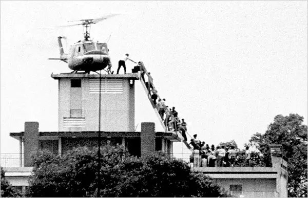

Helicopter Evacuation of Saigon, 22 Gia Long Street
Hubert van Es · 29 April 1975 · Photograph
In copyright. Look and learn: shown for study, not for download.
Hubert van Es, a Dutch photographer of thirty-three working for UPI, was in the darkroom at about 2:30 on the afternoon of 29 April 1975 when a colleague shouted that there was a helicopter on a roof. The longest lens left in the office was 300 mm. He shot about ten frames; the Air America Huey left with twelve or fourteen people, where eight was the recommended maximum. His caption named a CIA building at 22 Gia Long Street, but someone in UPI's Tokyo office changed it to the US embassy, and the error stuck. Saigon fell the next day.